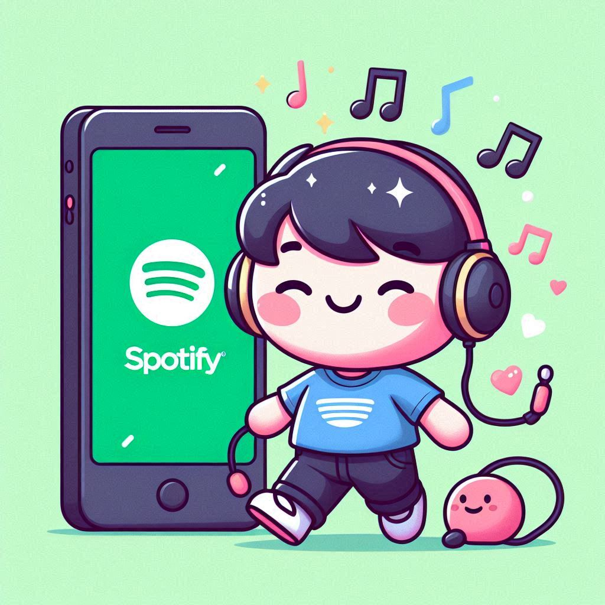

Why Spotify Premium is the Best Choice for Music Lovers
Music is a universal language, and with the advent of streaming platforms, enjoying your favorite songs has never been easier. Among all the music streaming services available today, Spotify stands out as one of the most popular. While the free version of Spotify gives you access to millions of songs, there’s a whole new world of features available if you upgrade to Spotify Premium. In this article, we’ll explore the many benefits of Spotify Premium and why it’s worth every penny. So, grab your headphones and let’s dive into the good stuff!
1. Ad-Free Listening Experience
One of the most annoying things about using free services is the constant interruptions. With Spotify free, you’ll hear ads between songs—sometimes even in the middle of your favorite track! These interruptions can break your music flow, especially when you're in the zone, enjoying a smooth playlist.
However, with Spotify Premium, ads become a thing of the past. You’ll get uninterrupted listening, meaning no more commercials cutting through your beats. It's just you, your music, and the vibes you create. Whether you're working, studying, or just relaxing, you can enjoy your tunes without the distraction of those awkward ad breaks.
2. Unlimited Skips – Freedom at Your Fingertips
Spotify free comes with limitations on skips. If you’re listening to a playlist or a radio station and you come across a song that you just can't stand, you can only skip a few times per hour. You’re basically at the mercy of Spotify’s playlist, which can be frustrating when you’re not in the mood for certain songs.
But with Spotify Premium, you can skip as many songs as you want, whenever you want. Whether you’re in the mood for rock, pop, or jazz, you can easily skip through songs until you find the perfect one. It’s the freedom to explore music without feeling stuck!
3. Offline Listening – Take Your Music Anywhere
Imagine you’re heading out for a long flight, road trip, or just to a place where internet connectivity is shaky at best. Spotify Premium has got you covered! With Premium, you can download your favorite songs, albums, and playlists and listen to them offline. This means no more worrying about data usage or buffering issues when you’re in a remote area.
Whether you’re commuting, traveling, or simply want to conserve data, you’ll have access to your music library at all times, even without an internet connection.
4. Better Sound Quality – Hear Every Note Clearly
Let’s face it—sound quality matters. Whether you’re a casual listener or an audiophile, the sound experience can make or break your music enjoyment. With the free version of Spotify, the sound quality is decent, but it’s not the best. Free users are limited to 160kbps, which can sometimes feel lacking, especially when you’re listening to intricate tracks or enjoying music with rich, detailed instrumentation.
On the other hand, Spotify Premium provides high-quality audio streaming at 320kbps, delivering crystal-clear sound with deep bass and precise treble. Whether you’re listening on high-end headphones or a car stereo system, the difference in sound quality is noticeable. With Premium, you can immerse yourself fully in your favorite tracks and enjoy a premium audio experience.
5. Spotify Connect – Control Your Music from Anywhere
Spotify Connect is another feature that sets Premium apart. It allows you to control your music from various devices, including your smartphone, tablet, computer, and even smart speakers like Alexa or Google Home. If you're hosting a party, for example, you can play your music on your phone and control it from across the room. Or, if you're lounging in bed, you can use your tablet to skip tracks on your Bluetooth speakers.
This seamless integration of devices means you can take control of your music anytime, anywhere. It's like having your own personal DJ, minus the flashy lights and loudspeakers.
6. Access to Exclusive Content and Early Releases
As a Spotify Premium subscriber, you’re not just getting access to the regular music library. You also get special access to exclusive content, including early releases from your favorite artists. Many artists drop their latest tracks or albums first for Premium users, so you’ll be one of the first to hear it. No more waiting for weeks to listen to that new album you’ve been dying to hear!
Spotify Premium also gives you access to exclusive playlists, podcasts, and concerts. It’s a great way to discover new music or dive deeper into an artist’s catalog, all while getting access to content not available to free users.
7. Higher Customization and Personalization
Spotify is known for its awesome recommendation engine. Whether you’re listening to your favorite playlist or a random artist, Spotify learns your tastes and makes recommendations based on your listening history. While this feature is available on the free version, Premium users get a more tailored experience.
Premium users also have access to curated playlists and personalized mixes that cater to your exact preferences. From workout playlists to mellow chill vibes, you’ll always have the right music for the moment. It’s like having your own personal DJ who knows exactly what you want to hear, even before you do.
8. Spotify Family Plan – Share the Love with Your Loved Ones
Spotify Premium is even better when you share it with your family. With the Spotify Premium Family Plan, you can add up to 6 accounts under one subscription. Each family member gets their own individual account, with all the same benefits of Spotify Premium. No more fighting over who gets to control the playlist, as everyone can have their own account and enjoy personalized recommendations.
On top of that, the Family Plan comes with a handy Spotify Kids app, which is a great feature for families with young children. It’s a safe and fun way for kids to explore music in a kid-friendly environment.
9. Spotify Free Isn’t All That Free, Anyway
Okay, let’s be honest. While Spotify Free might seem like a good deal, it’s not really “free” when you think about all the limitations. You’re stuck with ads, you can’t skip songs freely, and you’re limited to lower sound quality. In the long run, the value of Spotify Premium outweighs these drawbacks by offering a much better listening experience at a reasonable price.
When you factor in the convenience, quality, and added features that come with Premium, it becomes clear that upgrading is worth the investment. Plus, it’s way cheaper than some other subscription services out there.
10. Support Your Favorite Artists
Lastly, by subscribing to Spotify Premium, you're actually supporting the artists you love. Streaming services pay artists based on the number of plays their songs get, and Premium subscribers help generate more revenue for musicians. So, when you enjoy your favorite songs ad-free and in high quality, you’re also helping ensure that artists get paid fairly for their hard work.
Spotify Premium isn’t just a win for you—it’s a win for the artists who make the music you love. You’re contributing to the music industry in a meaningful way, all while enjoying the best streaming experience possible.
Final Thoughts: Why You Should Upgrade to Spotify Premium
In conclusion, Spotify Premium offers a whole range of benefits that make it the go-to choice for serious music lovers. From an ad-free experience and unlimited skips to offline listening and superior sound quality, Premium makes your music journey smoother and more enjoyable. Add to that the exclusive content, higher customization, and family-sharing options, and it's easy to see why Spotify Premium is worth the upgrade.
So, what are you waiting for? Sign up for Spotify Premium today and treat yourself to the ultimate music experience. After all, life’s too short to listen to ads!